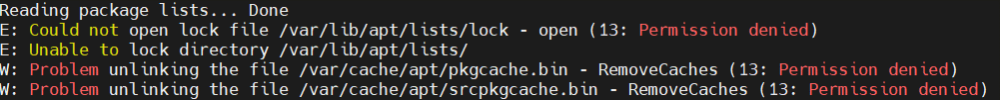
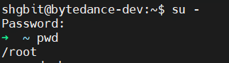
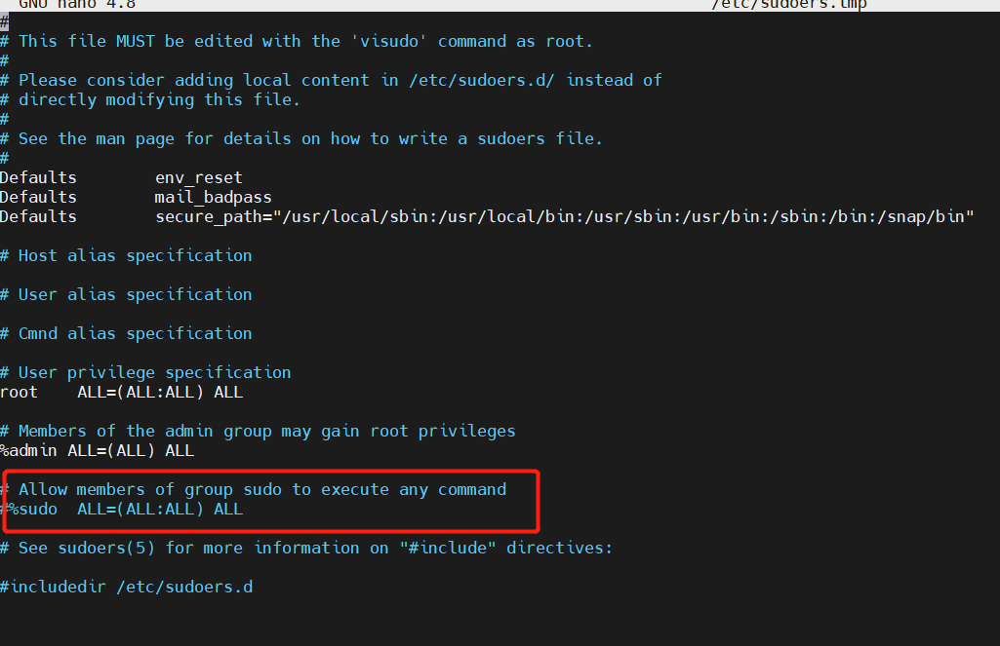
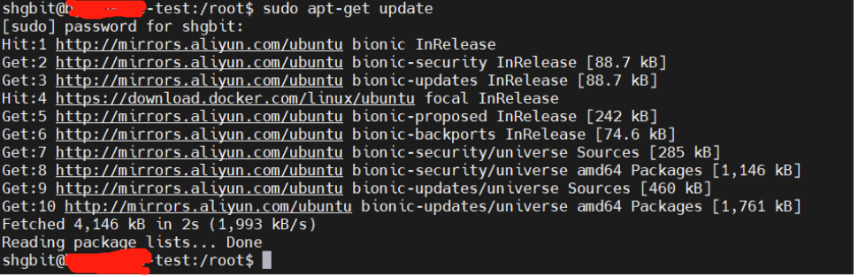

先对两者区别做个小结
1、定义上：
- su为switch user，即切换用户的简写。su是最简单的身份切换名，用su我们能够进行不论什么用户的切换，一般都是su - username，然后输入password就ok了，可是root用su切换到其它身份的时候是不须要输入password的。
- sudo是一种权限管理机制，依赖于/etc/sudoers，其定义了授权给哪个用户可以以管理员的身份能够执行什么样的管理命令。
2、格式上：
- su格式为两种：su -l USERNAME（-l为login，即登陆的简写）、su USERNAME。
- sudo格式：sudo -u USERNAME COMMAND。
3、默认情况下：
- su默认情况下如果不指定USERNAME（用户名），默认即为root，所以切换到root的身份的命令即为：su -root或su -，su root 或su。
- sudo默认情况下，系统只有root用户可以执行sudo命令。需要root用户通过使用visudo命令编辑sudo的配置文件/etc/sudoers，才可以授权其他普通用户执行sudo命令。
4、密码上：
- 两个命令的最大区别是：sudo 命令需要输入当前用户的密码，su 命令需要输入 root 用户的密码。
5、日志记录上：
- 尽管 sudo 命令是以目标用户（默认情况下是 root 用户）的身份执行命令，但是它们会使用 sudoer所配置的用户名来记录是谁执行命令。而 su 命令是无法直接跟踪记录用户切换到 root 用户之后执行了什么操作。
6、灵活性
- sudo 命令比 su 命令灵活很多，因为甚至可以限制 sudo 用户可以访问哪些命令。换句话说，用户通过 sudo 命令只能访问他们工作需要的命令。而 su 命令让用户有权限做任何事情。
接下来用实例来详细说说
su 的适用条件和威力
su命令就是切换用户的工具，怎么理解呢？比如我们以普通用户shgbit登录的，想要更新下软件列表，执行
1
apt-get update

shgbit用户没有这个权限，而这个权限恰恰由root所拥有。解决办法无法有两个，一是退出shgbit用户，重新以root用户登录，但这种办法并不是最好的；二是我们没有必要退出shgbit用户，可以用su来切换到root下进行添加用户的工作，等任务完成后再退出root。我们可以看到当然通过su 切换是一种比较好的办法；通过su可以在用户之间切换，如果超级权限用户root向普通或虚拟用户切换不需要密码，什么是权力？这就是！而普通用户切换到其它任何用户都需要密码验证；
su的优缺点
- su 的确为管理带来方便，通过切换到root下，能完成所有系统管理工具，只要把root的密码交给任何一个普通用户，他都能切换到root来完成所有的系统管理工作；但通过su切换到root后，也有不安全因素；比如系统有10个用户，而且都参与管理。如果这10个用户都涉及到超级权限的运用，做为管理员如果想让其它用户通过su来切换到超级权限的root，必须把root权限密码都告诉这10个用户；如果这10个用户都有root权限，通过root权限可以做任何事，这在一定程度上就对系统的安全造成了威协；想想Windows吧，简直就是恶梦；“没有不安全的系统，只有不安全的人”，我们绝对不能保证这 10个用户都能按正常操作流程来管理系统，其中任何一人对系统操作的重大失误，都可能导致系统崩溃或数据损失；所以su 工具在多人参与的系统管理中，并不是最好的选择，su只适用于一两个人参与管理的系统，毕竟su并不能让普通用户受限的使用；超级用户root密码应该掌握在少数用户手中，这绝对是真理！所以集权而治的存在还是有一定道理的；
sudo 的适用条件
由于su 对切换到超级权限用户root后，权限的无限制性，所以su并不能担任多个管理员所管理的系统。如果用su 来切换到超级用户来管理系统，也不能明确哪些工作是由哪个管理员进行的操作。特别是对于服务器的管理有多人参与管理时，最好是针对每个管理员的技术特长和管理范围，并且有针对性的下放给权限，并且约定其使用哪些工具来完成与其相关的工作，这时我们就有必要用到 sudo。
通过sudo，我们能把某些超级权限有针对性的下放，并且不需要普通用户知道root密码，只需要在使用的时候输入自己的账号密码，所以sudo 相对于权限无限制性的su来说，还是比较安全的，所以sudo 也能被称为受限制的su ；另外sudo 是需要授权许可的，所以也被称为授权许可的su；
sudo 执行命令的流程是当前用户切换到root（或其它指定切换到的用户），然后以root（或其它指定的切换到的用户）身份执行命令，执行完成后，直接退回到当前用户；而这些的前提是要通过sudo的配置文件/etc/sudoers来进行授权；
接着上面的例子
想要更新下软件列表，让这个指令成功执行，我们该怎么办呢？
- 获得授权，真实情况是需要找到管理员让他给我们赋权，我们现在来模拟这个情况，这里正好用下su命令
1
2
3su -
输入root用户密码
pwd //查看路径，确实已正确切换到管理员
- 获得授权，真实情况是需要找到管理员让他给我们赋权，我们现在来模拟这个情况，这里正好用下su命令
- 修改配置文件，解开红色框体里的注释，这里给予的权限是最大的，具体可以控制到详细的命令，哪些命令可以放权，哪些不可以，关于sudo授权的本篇不做展开
1
visudo // 修改/etc/sudoers ；（比如我们是以beinan用户登录系统的）
- 修改配置文件，解开红色框体里的注释，这里给予的权限是最大的，具体可以控制到详细的命令，哪些命令可以放权，哪些不可以，关于sudo授权的本篇不做展开
- 切换回当前用户
1
su shgbit //root用户切换回普通用户无需输入密码
- 切换回当前用户
- 再执行sudo命令成功执行
1
sudo apt-get update
- 再执行sudo命令成功执行